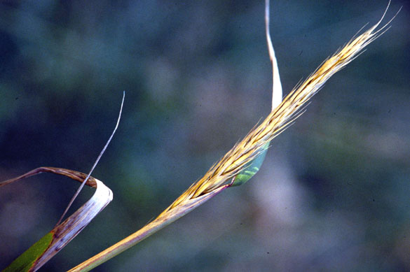
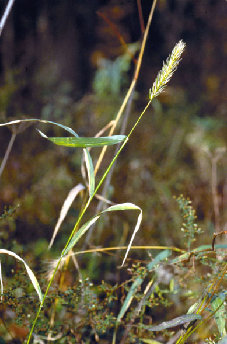

Elymus virginicus
Family: Poaceae
Virginia Rye
Swink/Wilhelm #3

FLOWERING:
SEED TIMING: Mid-October through November
HABITAT: Wooded floodplain, wet prairie and open savanna
DIAGNOSTIC FEATURES: 2 - 3 ft. Upright spike. Spikelets remain rigid and tight, often encased in leaf sheath. Short straight awns.
TO PICK: Seed should be straw colored, but can be picked slightly green. Seeds come off more easily when completely ripe, but some pulling pressure is needed. Pull off whole head or strip seed, whichever happens first. Seed stays on head a long period -- even over winter.